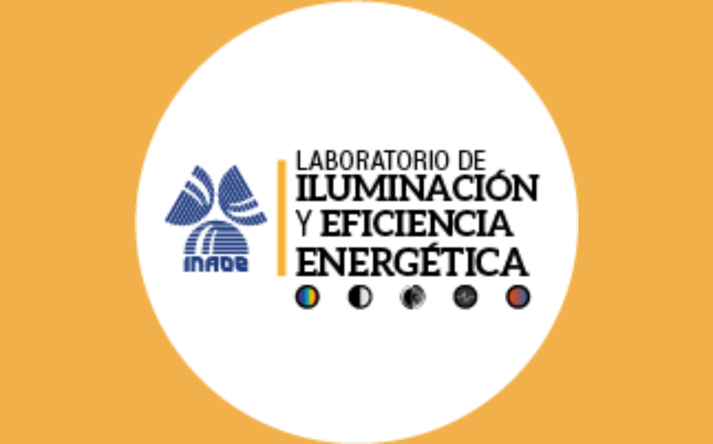
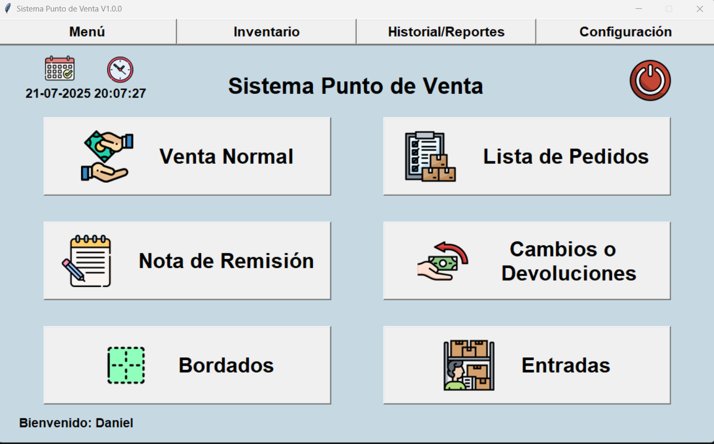
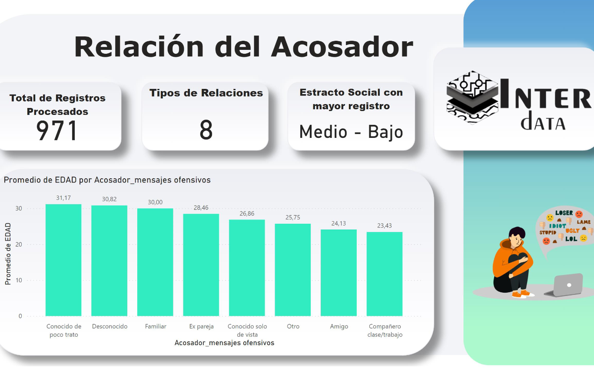

Hola soy Juan Daniel Carrasco Alonso
Estudiante de Ingeniería en Sistemas de Teconologías de Información Industrial.

Soy estudiante de Ingeniería en Sistemas y Tecnologías de la Información Industrial en la Benemérita Universidad Autónoma de Puebla, actualmente cursando el septimo semestre de mi carrera. Durante mis estudios, he adquirido una sólida base en programación, desarrollo de software y gestión de bases de datos. He tenido la oportunidad de participar en varios proyectos académicos que me han permitido aplicar mis conocimientos teóricos en situaciones prácticas, lo cual ha fortalecido mis capacidades para resolver problemas y trabajar en equipo. Estoy abierto a oportunidades de prácticas, pasantías y colaboraciones que me permitan adquirir experiencia en el campo y aplicar mis habilidades en entornos reales.
Desarrollo Web
Experiencia académica en la construcción de portales web completos. Enfoque en código limpio, diseño adaptable a móviles y la implementación correcta de la arquitectura Modelo-Vista-Controlador (MVC).
Análisis de Datos
Aplicación de conocimientos lógico-matemáticos para interpretar tendencias. Me especializo en organizar conjuntos de datos complejos y presentarlos de manera clara y comprensible mediante gráficos dinámicos.
Desarrollo de Software de Escritorio
Capacidad para desarrollar programas a medida que resuelven problemas específicos. Desde la lógica de programación hasta el diseño de la interfaz y la persistencia de datos local.


